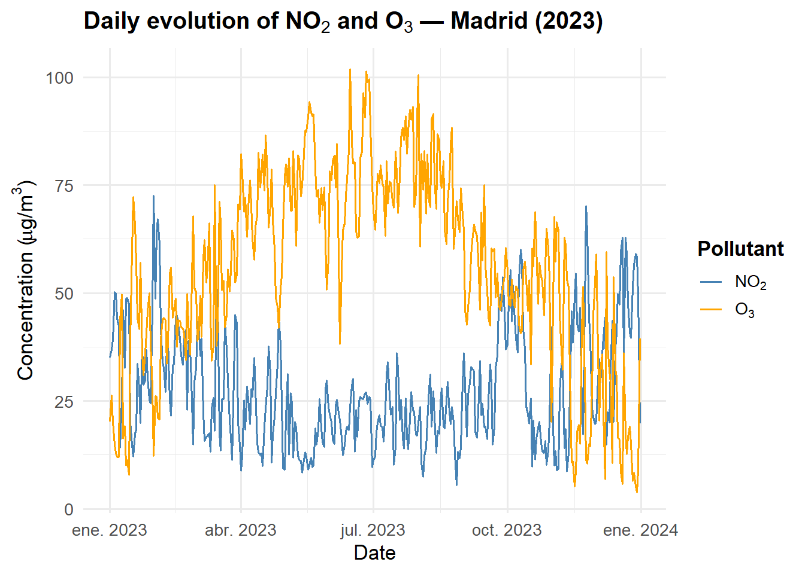
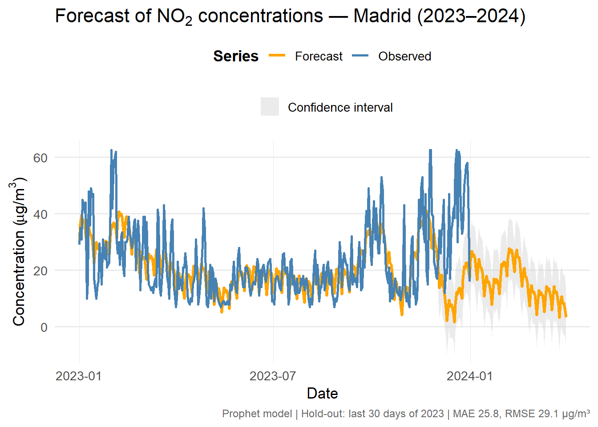

ANO MES DIA fecha
1 2023 4 1 2023-04-01
2 2023 4 2 2023-04-02
3 2023 4 3 2023-04-03
4 2023 4 4 2023-04-04
5 2023 4 5 2023-04-05
6 2023 4 6 2023-04-06Citizen Science and STEM Education with R: Teaching Innovation through Open Urban Climate Data
Open Data Analysis from Madrid (2023)
1. Introduction
The availability of open environmental datasets published by the Madrid City Council provides an exceptional opportunity to teach and learn data analysis using real-world urban data.
This notebook integrates air quality and meteorological records from the city’s open data portal and demonstrates how R can be used to clean, analyse, and visualise environmental information in a fully reproducible workflow.
The goal is twofold:
1. To promote data literacy and scientific reasoning through real datasets.
2. To create an educational resource that connects data science with urban sustainability challenges.
2. Data Sources
The analysis uses three open datasets published by the Madrid City Council (Portal de Datos Abiertos: https://datos.madrid.es/portal/site/egob), covering the period 2020–2024:
- Air Quality: hourly concentrations of major pollutants (NO₂, O₃, PM₁₀, PM₂.₅, SO₂, CO, BTX).
- Meteorological Data: daily temperature, humidity, precipitation, and wind speed.
- Station Metadata: geolocation, altitude, and classification (Urban traffic, Urban background, Suburban).
For this case study, the year 2023 was selected to ensure completeness and comparability across datasets.
3. Data Processing
Key R packages for the workflow include dplyr, tidyr, ggplot2, and lubridate.
The datasets are harmonised by date and station, creating daily mean values for each pollutant.
4. Temporal Evolution of NO₂ and O₃
The figure below shows the daily mean concentrations of nitrogen dioxide (NO₂) and ozone (O₃) for 2023.
These pollutants exhibit opposite seasonal behaviour: NO₂ peaks during winter due to traffic and heating emissions, while O₃ increases in summer as a photochemical secondary pollutant.

The figure illustrates the daily evolution of nitrogen dioxide (NO₂) and ozone (O₃) concentrations during 2023 in Madrid. The two pollutants show opposite seasonal behaviour: NO₂ peaks during winter months, mainly due to road traffic and atmospheric stability, while O₃ increases during spring and summer, when photochemical activity is higher. This complementary pattern offers an excellent opportunity for students to explore data correlations and interpret air-quality dynamics using R.
| pollutant | mean_conc | sd_conc | max_conc |
|---|---|---|---|
| NO2 | 27.61 | 13.51 | 72.57 |
| O3 | 55.87 | 22.68 | 101.84 |
These results demonstrate how open environmental datasets can be used in R to develop students’ analytical, interpretive, and communication skills — bridging data science education with urban sustainability and public health.
5. Contrasting Seasonal Patterns: NO₂ vs O₃
Understanding the joint dynamics of nitrogen dioxide (NO₂) and ozone (O₃) provides valuable insight into the chemical and meteorological mechanisms that shape urban air quality.
While NO₂ is mainly a primary pollutant emitted by traffic and heating, O₃ is a secondary photochemical compound formed through reactions between NOₓ and volatile organic compounds under sunlight.
This leads to opposite seasonal behaviours: NO₂ concentrations peak in winter due to stable atmospheric conditions, whereas O₃ increases in spring and summer.
The following comparative panel summarises these relationships, showing daily mean concentrations for both pollutants in 2023.

6. Conclusion and Outlook
This notebook demonstrates a reproducible workflow for analysing open air-quality data with R.
Future extensions will include the integration of meteorological predictors and time-series forecasting models, enabling students to explore predictive analytics and climate–pollution interactions.